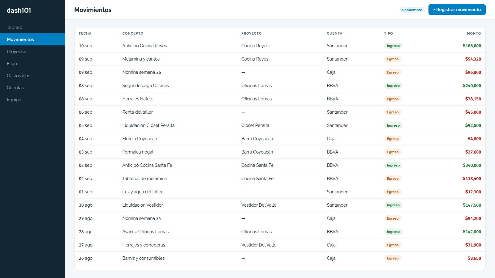
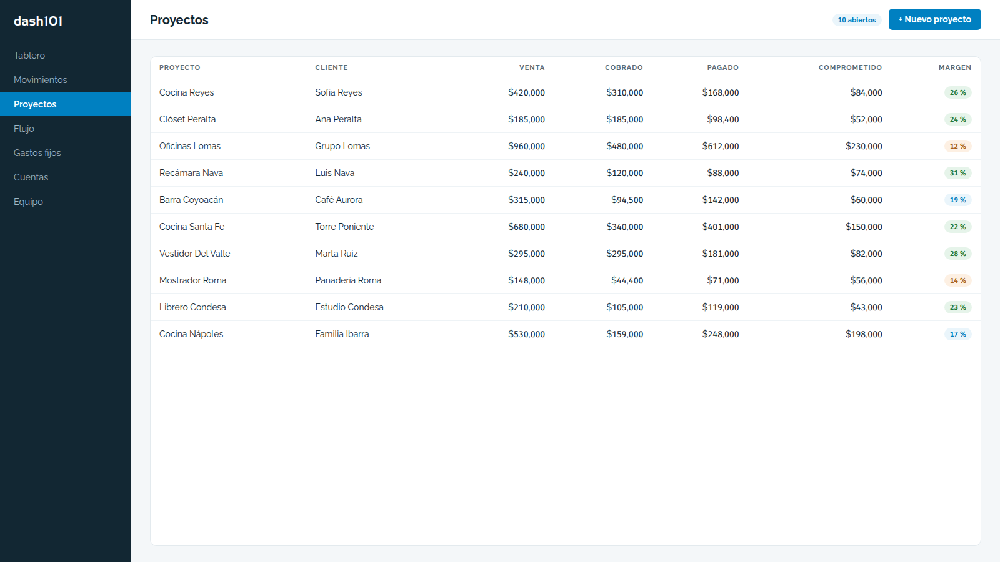
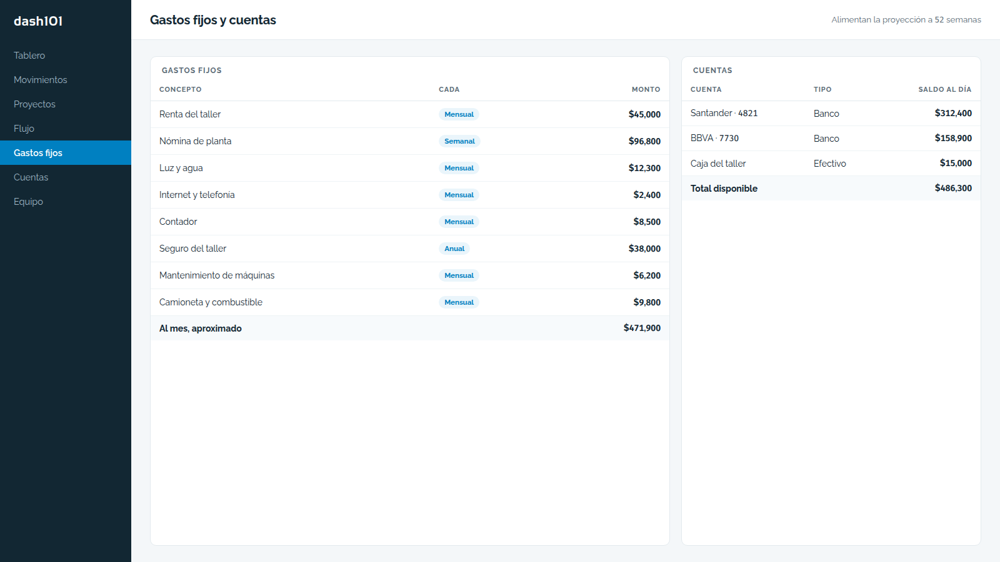
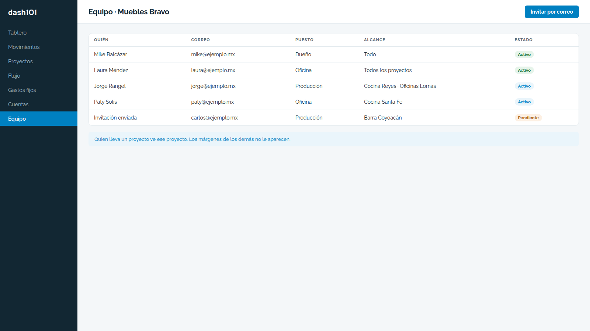
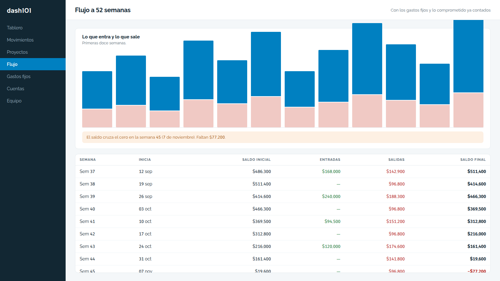

Lleva las cuentas de un negocio que trabaja por proyecto: cuánto entró, cuánto salió, a qué proyecto pertenece cada peso y cuánto queda. No sustituye al contador ni factura: es el tablero donde el dueño ve, sin abrir una hoja de cálculo, si el proyecto que está fabricando ya se pagó solo o todavía va perdiendo. Maneja varios negocios con la misma cuenta y separa lo que cada quien alcanza a ver.
Pedir una demostración




Se dice de una vez, porque vender lo que no existe sale caro.